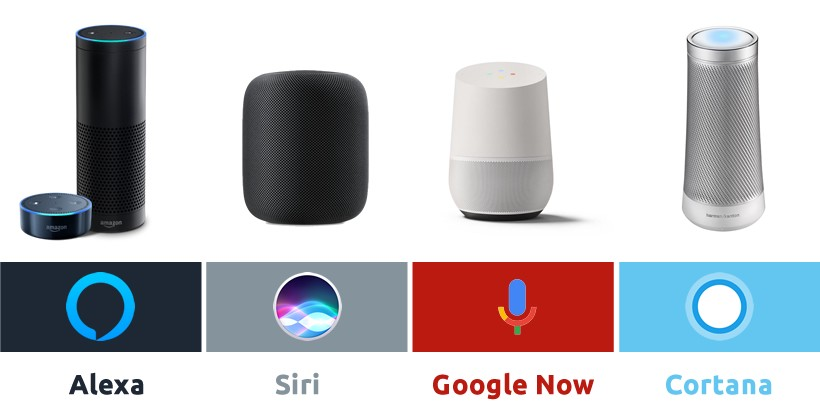
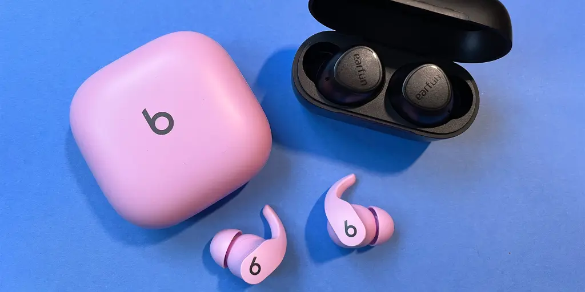
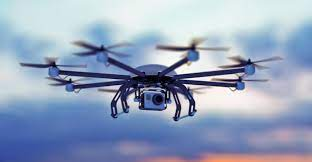
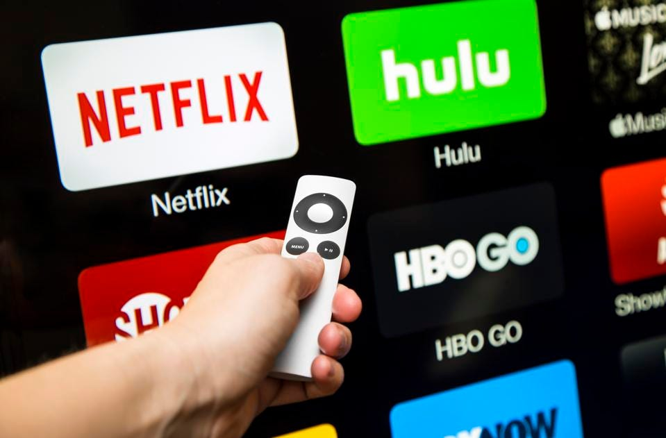

TECHNOLOGIES ARE....
>
Wi-Fi
The smartphone and the internet we use today wouldn't have been possible without wireless communication technologies such as Wi-Fi. In 1995 if you wanted to "surf" the internet at home, you had to chain yourself to a network cable like it was an extension cord. In 1997, Wi-Fi was invented and released for consumer use. With a router and a dongle for our laptop, we could unplug from the network cable and roam the house or office and remain online.
Internet of things

Today, there are tens of billions of internet-connected devices around the globe that allow us to perform smart home tasks such as turning on our lights, checking who's at our front door and getting an alert when we're out of milk. It also has industrial applications, such as in health care and management of municipal services.
Voice assistants

For many consumers, the heart of the smart home is a voice assistant such as Amazon's Alexa, Google's Assistant and Apple's Siri. In addition to being a prerequisite for controlling devices in your home, their connected speakers will tell you the weather, read you the news and play music from various streaming services, among thousands of other "skills."
Bluetooth

Another wireless communication technology that has proven indispensable is Bluetooth, a radio link that connects devices over short distances. Introduced to consumers in 1999, Bluetooth was built for connecting a mobile phone to a hands-free headset, allowing you to carry on conversations while keeping your hands available for other uses, such as driving a car.
VPN
The virtual private network, essentially an encrypted tunnel for transferring data on the internet, has proven invaluable for both businesses and individuals.
MP3
Entertainment has become a whole lot more portable in the past quarter century, in large part due to the introduction of the MP3 and MP4 compression technologies.
Facial recognition

Facial recognition is a blossoming field of technology that's playing an ever-growing role in our lives. It's a form of biometric authentication that uses the features of your face to verify your identity.
The tech helps us unlock devices and sort photos in digital albums, but surveillance and marketing may end up being its prime uses.
Drones

Drones have really taken off in recent years.
Drones now range from noisy quadcopters to payload-carrying mini-planes. On the US-Mexico border, Customs and Border Protection uses $16 million military-style Predator drones that can fly as high as nine miles, equipped with radar strong enough to detect footprints in the sand.
In the not-too-distant future, drones are expected to crowd the skies, acting as personal air taxis and performing lifesaving duties such as delivering medicine, helping with search and rescue, and fighting fires.
Social networking

The online world was a very different place two decades ago. Social networkers of a certain age may remember Friendster, the site that launched in 2002 and allowed people to fill out an online profile and connect with people they knew in real life. But two years later, Mark Zuckerberg changed everything when he launched a social-networking site for college students called Facebook.
Video streaming

Twenty-five years ago, a new media storage format was taking the entertainment world by storm. DVDs had superior picture and sound quality to the VHS tape, and they took up less room on your shelves. Movie rental stores abandoned VHS for DVDs, and online rental services like Netflix popped up, offering the convenience of mailing rented discs directly to you.
Then Netflix introduced its streaming service, allowing people to watch movies and TV shows across the internet. Consumers fell in love with the convenience of on-demand programming and began the phenomenon of "cutting the cord." As more streaming services like Amazon Prime Video, Hulu and YouTube emerged, consumers started canceling cable and satellite subscriptions and rental services such as Blockbuster went belly up.
Apple iPhone
Though it wasn't the first smartphone, Apple really got the ball rolling with the introduction of the iPhone in 2007. Social media, messaging and the mobile internet wouldn't be nearly as powerful or universal if they hadn't been freed from the shackles of the desktop computer and optimized for the iPhone and its dozens of competitors.